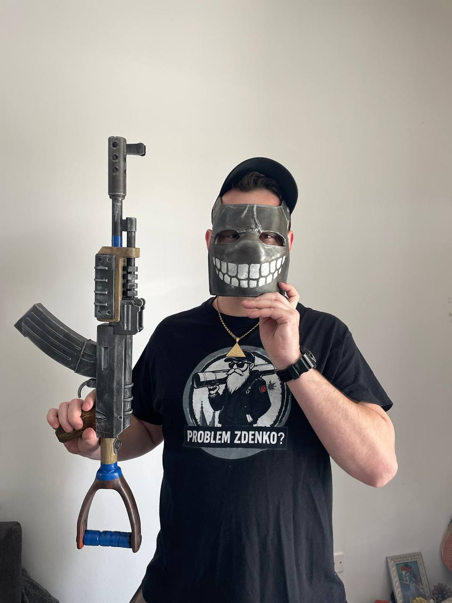
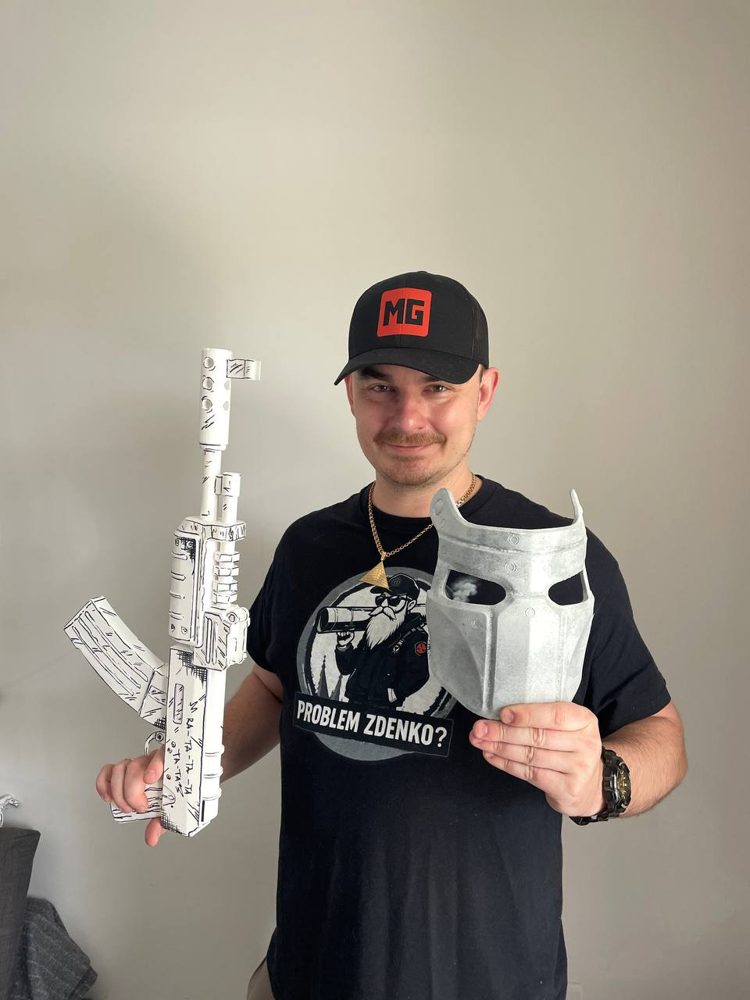
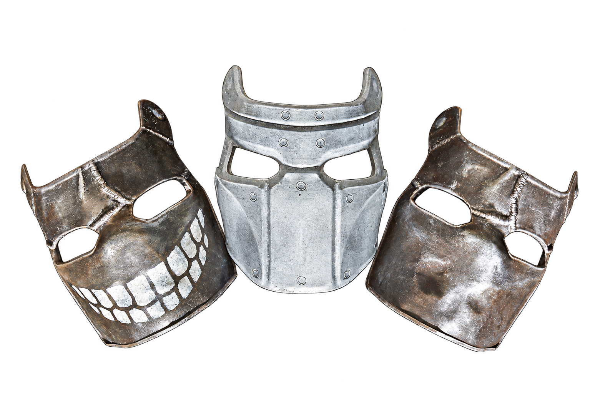

PREŽIŤ JE
LEN ZAČIATOK.
Som MG. Hrám Rust, rozprávam príbehy zo solo, duo, trio aj veľkých clan hier a spájam hráčov z Česka a Slovenska.
Pravidelné Rust streamy na YouTube a Twitchi.

MOJA TVORBA.

KTO JE MG?
Rust príbehy, ktoré začínajú plánom. A končia úplne inak.
Tvorím videá v slovenčine aj angličtine. Od solo výprav cez duo a trio až po veľké clan bitky. Na kanáli nájdeš survival, PvP, nečakané zvraty a momenty, ktoré sa dejú len v Ruste.
KDE MA NÁJDEŠ?

MG RUST
BUĎ SÚČASŤOU.
Na YouTube si môžeš vybrať zo šiestich úrovní členstva. Členskú rolu získaš aj na MG Rust Discorde.
VIP NA RUST ODDYSEY CZ/SK
Pozrieť členstvo S členstvom úrovne 2 Double Barrel môžeš získať free VIP: prepoj YouTube s Discordom, vytvor VIP ticket na RUST ODDYSEY a prilož screenshot čísla objednávky z účtenky.
MÔJ SETUP.
PC ZOSTAVA
CPUAMD Ryzen 7 9800X3D
GPUNVIDIA GeForce RTX 3070 Ti 8 GB
RAMCorsair Vengeance DDR5 32 GB · 6000 MHz CL30
DoskaMSI X870 Tomahawk
SSDSamsung 980 EVO Gen 4 · 2 TB
ZdrojCorsair 1000W Gold
PERIFÉRIE
MyšLogitech G Pro Superlight V1
MonitorLG 27GP850P-B · 1440p · 180 Hz
MikrofónRODE XDM-100
KlávesnicaCorsair K70 Core
SlúchadláLogitech PRO X v1 Corded
Výbava, na ktorej vznikajú MG Rust videá a streamy.